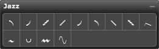

Palette Overview

The following describes each of the tools in the Jazz palette:
You can drag some of them to encompass more than one note; you can reposition all. The pop-up menu contains line textures and shapes to designate different intensities you can associate with their articulations.
Most of the signs have more than one name and meaning. Consult a jazz notation text to learn more about the terminology and use of jazz articulations. Here is a brief summary of terms:
- Plop - Slide rapidly down diatonic scale before sounding the note
- Scoop - Bend the note and slide into the target note
- Lift - Enter note via chromatic or diatonic scale beginning about a third below
- Smooth Lift - Enter note via chromatic or diatonic scale beginning about a third below drawn with a smooth line
- Doit - Sound note then gliss upwards from 1 to 5 steps
- Fall - Opposite of lift
- Smooth Fall - Opposite of lift drawn with a smooth line
- Rough Fall - Opposite of lift drawn with a wavy line
- Flip - Sound note, raise pitch and drop into following note
- Smear - Slide into note from below; reach correct pitch before the next note
- Bend - Bend the pitch by lipping down a half-step and returning to the pitch
- Shake - Oscillate the tone, much as you do for a trill. Sustain note with vibrato, tremolo, or feedback effect.
- Wave - Used to represent various waves. When you click on this articulation you choose which type of wave to display.